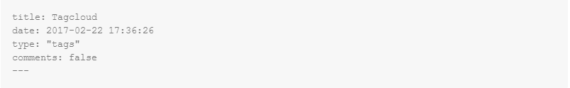
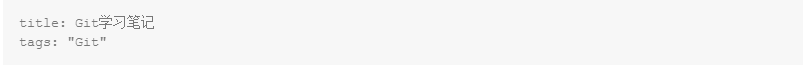

刚刚接触hexo，喜欢其简约的风格，因此想着自己也搭建一个。网上使用hexo搭建博客的教程很多，我自己也跟着别人的教程一步步的搭建了属于自己的博客。基本上只要是有点计算机基础的人，完全可以轻松的使用hexo搭建起自己的博客。记录一下自己的历程，算是个人笔记吧。
hexo是一款基于Node.js的静态博客框架, hexo github链接 ,这篇笔记主要是针对windows系统进行搭建的。
准备工作
安装Node
作用：用来生成静态页面。
Node.js官网：Node.js
安装Git
作用：把本地的hexo内容提交到github上去。
Git官网：Git
初始配置，请看Git学习笔记
Github账号申请
作用：是用来做博客的远程创库、域名、服务器之类的。
安装Hexo
使用以下命令安装hexo到全局
|
|
然后输入命令 hexo -v输出hexo的版本号即为安装成功。
博客搭建
初始化
在某个地方新建一个项目文件夹（比如Blog），然后进入Blog目录，以下所有的命令行操作都是在这个文件夹下进行的。
|
|
生成静态页面
初始化完成之后，就已经生成一篇”hello word”的文章了，现在执行以下命令把文章编译为静态页面：
|
|
本地启动
把文章变为页面之后，可以执行以下命令，本地启动服务，在浏览器中输入http://localhost:4000/查看生成的页面效果。
|
|
如果你看到了下面这个画面，恭喜你，你成功了！

若不能看到上面页面，说明环境还没配置好
先执行
|
|
再执行：
|
|
得到: INFO Hexo is running at http://localhost:4000/. Press Ctrl+C to stop.
然后在浏览器中输入http://localhost:4000/，便可看到生成的静态页面。
更换主题
上面的博客效果是hexo自己默认的主题landscape，我将它修改成yilia主题
clone主题代码
在主目录下执行下面的命令clone主题代码：
|
|
修改配置文件
注意：修改的时候，每个冒号后面都需要留一个英文空格，不然会报错！
修改Blog/_config.yml文件：
|
|
修改themes/yilia/_config.yml文件：
更改主题之后可以使用命令hexo server打开本地服务，查看效果。
部署到Github上
建立Repository
建立与你用户名对应的仓库，仓库名必须为[your_user_name.github.io]，固定写法。
修改配置文件
部署之前先修改Blog/_config.yml文件，注意: 后面要有空格：
|
|
然后使用以下命令进行部署：
|
|
如果执行上述命令报错，你可以试试下面这个命令再试：
|
|
然后再浏览器中输入https://wenhuiyang-luck.github.io/ 就行了。把wenhuiyang-luck换成你的名字即可。
后期部署步骤
搭建完成之后，通过以下简单命令，就可以维护自己的博客：
|
|
#####
**遇到的问题：标签和分类无法显示，怎么解决？
- 新建一个页面，命名为tags。命令如下：会在blog\source\下生成一个名为tags的文件夹，打开里面的index.md，添加内容，如下：

如果启用多说评论，默认页面会带有评论。需要关闭的话，就加上comment: false.注意：冒号后有一个空格。
- 当
$ hexo new xxx一篇新的文章，在新生成的.md文章默认格式title下添加tags字段，如下图:

“Git”是你的标签名，若为多个标签，写成如下形式：tags: [tag1,tag2,tag3]
分类(categories)的设置与上面一样。
更详细教程，请参考：http://www.jianshu.com/p/f4cc5866946b